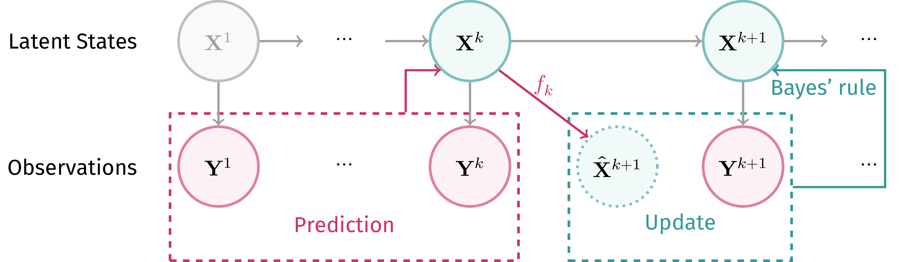
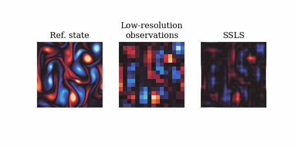
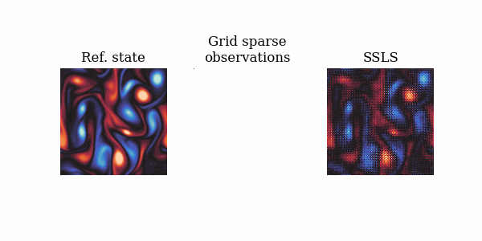
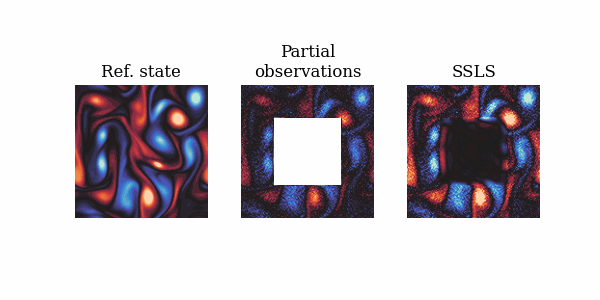

Zhao Ding1, Chenguang Duan1, Yuling Jiao1, Jerry Zhijian Yang1, Cheng Yuan2 and Pingwen Zhang1,3
Arranged in alphabetical order.
1 Wuhan University, 2 Central China Normal University, 3 Peking University


We propose nonlinear assimilation method called score-based sequential Langevin sampling (SSLS) within a Bayesian recursive framework.
Consider the following system: \[ \begin{align*} \mathbf{X}^{k} & =f_{k-1}(\mathbf{X}^{k-1}, \eta^{k-1}), \quad k > 1, \\ \mathbf{Y}^{k} & =g_{k}(\mathbf{X}^{k}, \xi^{k}), \quad k \geq 1, \end{align*} \] where \(\mathbf{X}_k\) is the latent states of interests evolved by \(f_k\), and \(\mathbf{Y}_k\) is the observations under measurement \(g_k\). Here we assume that \(\eta^k\) and \(\xi^k\) are noises with known distributions.
The goal of Data Assimilation: Given historical observations \(\mathbf{y}^{[k]}\), (\([k]\) stands for \(\{1, \cdots, k\}\)), estimate the posterior distribution of the latent states: \(p_{\mathbf{X}^{k}|\mathbf{Y}^{[k]} = \mathbf{y}^{[k]}}\).
Our work is carried out under the recursive Bayesian framework described below: \[ \begin{align*} & p_{\mathbf{X}^k|\mathbf{Y}^{[k]}}(\mathbf{x}|\mathbf{y}^{[k]}) \\ \propto & {\color{orange} p_{\mathbf{Y}^{[k]}|\mathbf{X}^{k}}(\mathbf{y}^{[k]}|\mathbf{x})} {\color{teal} p_{\mathbf{X}^{k}}(\mathbf{x})} \\ \propto & {\color{orange} p_{\mathbf{Y}^{k}|\mathbf{X}^{k}}(\mathbf{y}^{k}|\mathbf{x})} \cancel{\color{orange}p_{\mathbf{Y}^{[k-1]} | (\mathbf{X}^{k}, \mathbf{Y}^{k})}(\mathbf{y}^{[k-1]}|\mathbf{x}, \mathbf{y}^{k})} \frac{\color{teal} p_{\mathbf{X}^{k}|\mathbf{Y}^{[k-1]}}(\mathbf{x}|\mathbf{y}^{[k-1]})}{\cancel{\color{teal} p_{\mathbf{Y}^{[k-1]}|\mathbf{X}^{k}}(\mathbf{y}^{[k-1]}|\mathbf{x})}} \\ = & {\color{orange} p_{\mathbf{Y}^{k}|\mathbf{X}^{k}}(\mathbf{y}^{k}|\mathbf{x})} {\color{teal}p_{\mathbf{X}^{k}|\mathbf{Y}^{[k-1]}}(\mathbf{x}|\mathbf{y}^{[k-1]})} \end{align*} \]
The posterior score now can be decomposed as the sum of likelihood score and prior score: \[ \underbrace{\nabla \log p_{\bf{X}_k|\bf{Y}_{[k]}} (\bf{x}|\bf{y}_{[k]})}_\text{score of posterior} = \nabla \log \underbrace{p_{\bf{Y}_k|\bf{X}_{k}}(\bf{y}_k|\bf{x})}_\text{likelihood} + \underbrace{\nabla \log p_{\bf{X}_k|\bf{Y}_{[k-1]}}(\bf{x}|\bf{y}_{[k-1]})}_\text{score of prior}. \] The likelihood score can be computed with known measurement model and noises. As for the prior score, we exploit the score matching technique at each time step, given the prior ensemble from last step.
After assembling the posterior score, we can use any Langevin-type sampling method to derive samples from the posterior distribution, starting from the transitioned ensemble from last time step.
We provide a flow chart below.

We provide the python-like pseudocode below.
# start from an initial prior
prior = sample_from_prior()
for i in range(k+1):
# sliced / implicit / denoising
prior_score = score_matching(prior)
# assemble posterior
posterior_score = lambda x: grad_log_likelihood(x, y[i]) + prior_score(x)
# any Langevin-type sampling method
posterior = langevin(prior, posterior_score)
# dynamics transition to get best guess for next step
prior = dynamics_transition(posterior)Numerical examples demonstrate its outstanding performance in high-dimensional and nonlinear scenarios, as well as in situations with sparse or partial measurements. Please refer to our paper for more results.
  
If you find our work useful for your research, please consider citing
@misc{ding2024nonlinearassimilationscorebasedsequential,
title={Nonlinear Assimilation with Score-based Sequential Langevin Sampling},
author={Zhao Ding and Chenguang Duan and Yuling Jiao and Jerry Zhijian Yang and Cheng Yuan and Pingwen Zhang},
year={2024},
eprint={2411.13443},
archivePrefix={arXiv},
primaryClass={math.NA},
url={https://arxiv.org/abs/2411.13443},
}